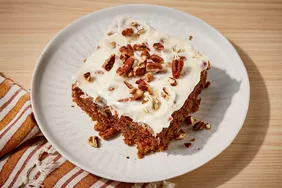

Carrot Cake

This carrot cake recipe with a homemade cream cheese frosting is my favorite,
and I have tried many carrot cakes! It's moist, easy to make with grated carrots, and so delicious
Ingredients
- Sugars
- Oil
- Eggs
- Vanilla
- Flour
- Cinnamon
Directions
- Make the batter: Beat the wet ingredients together, then mix in the dry ingredients. Stir in the carrots and fold in the pecans.
- Bake the cake: Pour the batter into the prepared cake pan or pans. Bake in the preheated oven until a toothpick comes out clean.
- Frost the cake: Beat the frosting ingredients together until smooth and creamy. Stir in the pecans. Frost the (completely cooled) cake..